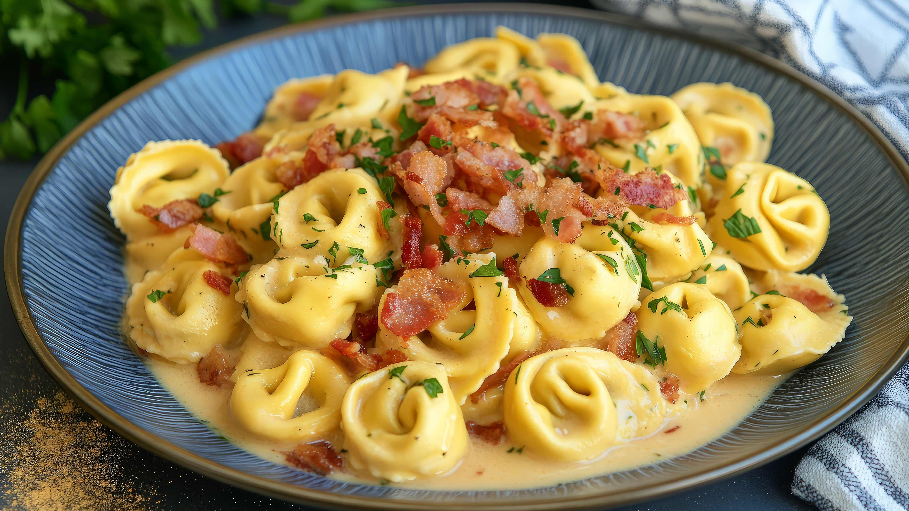

Tortellini Recipe

Tortellini Carbonera
To make this delicious tortellini carbonara, start by combining bacon, cream, parsley, and cheese in a large saucepan and cooking the mixture until it’s heated through and creamy. Meanwhile, prepare the tortellini according to the package directions, then drain it well and transfer it to a serving bowl. Pour the warm cheese sauce over the tortellini and gently toss until the pasta is evenly coated. For a finishing touch, sprinkle freshly chopped parsley on top and serve immediately for a rich, flavorful meal.
List of Ingredients
- 1 package of tortellini (cheese or your preferred filling)
- 6 slices of bacon, chopped
- 1 cup heavy cream
- ½ cup grated Parmesan cheese
- 2 tablespoons fresh parsley, chopped (plus extra for garnish)
- Salt and pepper to taste
Steps for this delicous dish
- In a large saucepan, cook the chopped bacon over medium heat until crisp.
- Add the heavy cream, grated Parmesan cheese, and 2 tablespoons of chopped parsley to the pan.
- Stir the mixture and cook until the sauce is heated through and slightly thickened.
- While the sauce cooks, prepare the tortellini according to the package directions.
- Drain the cooked tortellini and transfer it to a large serving bowl.
- Pour the warm cheese and bacon sauce over the tortellini.
- Genlty toss the pasta until evenly coated with the sauce
- Sprinkle with additional fresh parsley before serving.
- Serve immediately while hot and creamy!
Home